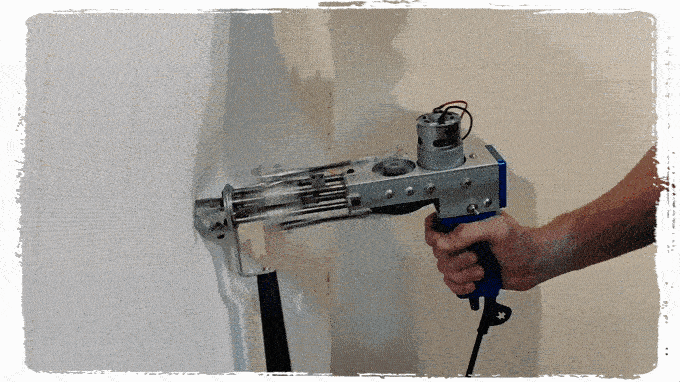
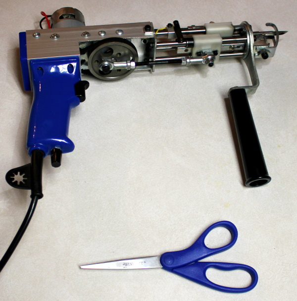
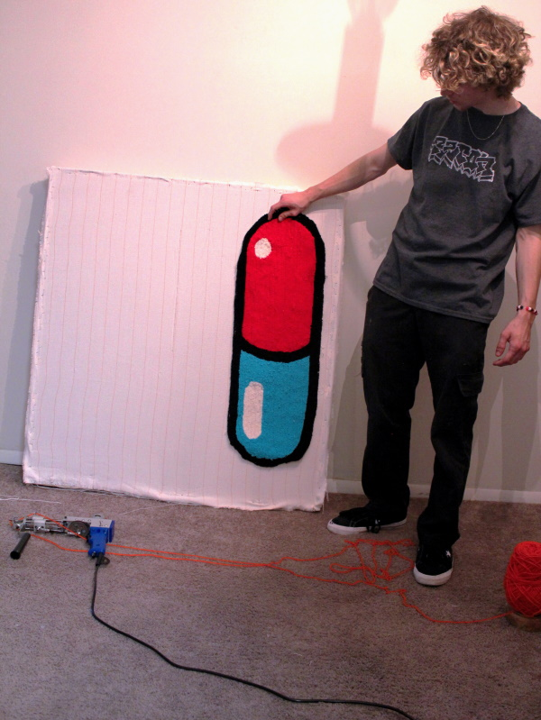
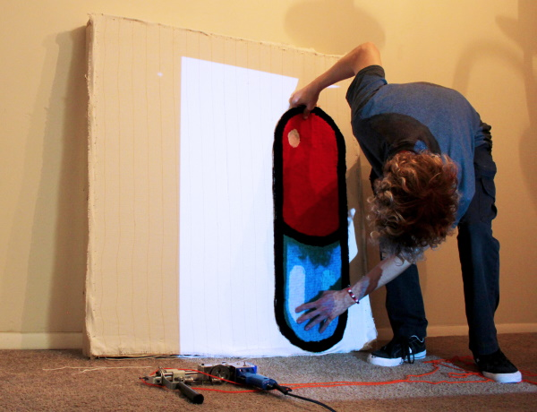
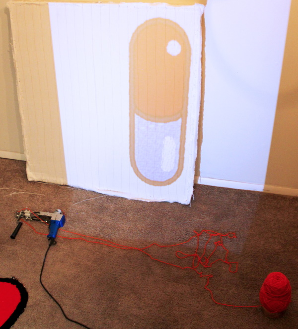
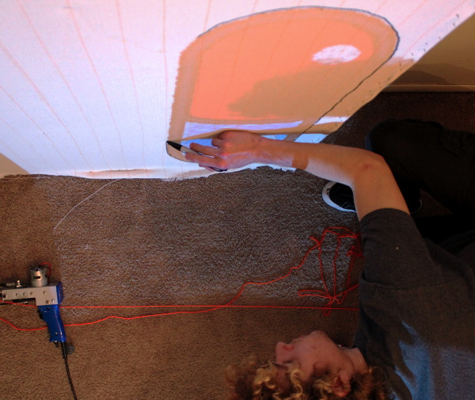

The rug gun is a simple tool that uses yarn threaded through a needle hooked up to a power cable, when you pull the trigger and press the needle against the frame you can design whatever you want.


The workspace consists of a 3.5 x 3.5 ft frame, a rug gun, scissors, colored yarn, a projector for stenciling, and markers.


To create a stencil, we use a projector with a predetermined design placed onto the frame and then traced with a sharpie.
